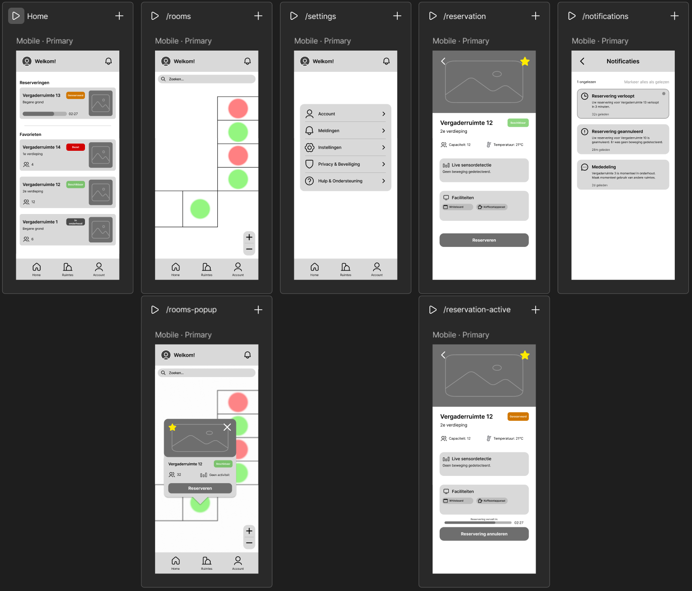
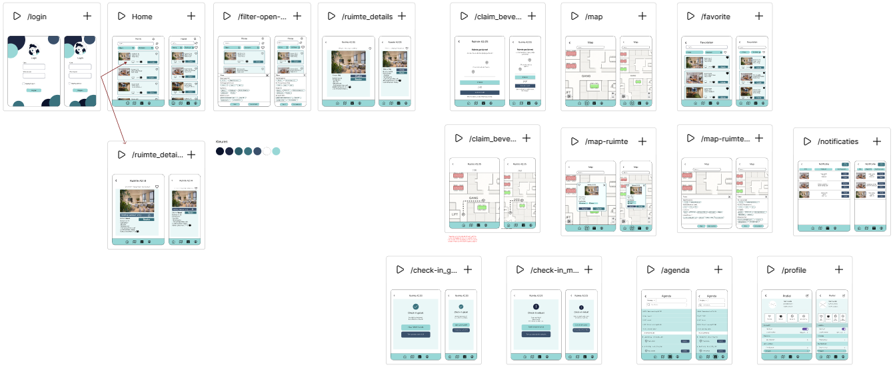

Ik ben Ruben, 18 jaar, en student HBO-ICT bij Windesheim met onder andere ervaring in HTML, CSS en JavaScript. Ik vind het leuk om nieuwe dingen te leren en uitdagingen aan te gaan.
Ik volg inmiddels al 2 jaar de opleiding HBO-ICT aan Windesheim in Almere, en ik heb al veel geleerd.
Voor deze casus bestond het probleem dat nieuwe Windesheim studenten moeite hebben om hun weg te vinden op de campus zowel in Almere als in Zwolle: locaties, gebouwen, lokalen, routes, drukte, wachttijden en voorzieningen. De directie heeft besloten om een Campus Navigation Companion te ontwikkelen: een slimme, contextuele UI die studenten helpt om snel, prettig en stressvrij hun route te vinden.
De primaire doelgroep bestaat uit nieuwe studenten die voor het eerst de campus betreden. Deze studenten zijn vaak jong en hebben beperkte ervaring met de campusindeling, waardoor ze zich overweldigd kunnen voelen bij het navigeren naar hun lessen, faciliteiten of sociale evenementen.
Andere doelgroepen waar ook rekening mee gehouden moest worden, waren internationale studenten, studenten met een beperking, en bezoekers en bedrijfsbegeleiders die open dagen en ouderavonden bezoeken. Deze groepen hebben mogelijk specifieke behoeften en uitdagingen bij het navigeren op de campus, zoals taalbarrières, toegankelijkheidseisen of beperkte kennis van de campusindeling.
Het resultaat dat we met ons team moesten opleveren bestond uit het Design Thinking proces, en dat bestond uit de volgende onderdelen:
Voor deze casus bestond er een middelgroot bedrijf dat problemen ervaart met het gebruik van zijn vergaderruimtes. Veel ruimtes worden vooraf gereserveerd, maar uiteindelijk niet gebruikt. Dit leidt tot inefficiënt ruimtegebruik en frustratie bij medewerkers die op zoek zijn naar een beschikbare werk- of vergaderruimte.
Met die nieuwe applicatie moeten medewerkers eenvoudig beschikbare ruimtes kunnen vinden en tijdelijk kunnen reserveren om daar direct naartoe te gaan. Reserveren is slechts een mechanisme om onderweg naar de ruimte te voorkomen dat iemand anders deze bezet. De beschikbaarheid wordt uitsluitend bepaald door sensordata, niet door agendaplanning. Als de ruimte niet binnen korte tijd na de reservering bezet blijft, wordt deze automatisch weer als beschikbaar weergegeven.
De primaire doelgroep bestaat uit medewerkers die regelmatig vergaderruimtes gebruiken. Deze groep medewerkers werken voornamelijk hybride en hebben vaak op korte termijn een ruimte nodig. Het huidige systeem wordt niet volledig vertrouwd, doordat ruimtes soms gereserveerd maar leeg zijn, of bezet terwijl ze als vrij staan aangegeven. Dit leidt tot frustratie en tijdverlies.
Het resultaat dat we met ons team moesten opleveren bestond uit de volgende onderdelen:
Voor deze opdracht moest ieder groepslid een high-fidelity wireframe ontwerpen. Zo waren dit mijn high-fidelity wireframes.

In de week na het ontwerpen, moesten we alle gemaakte high-fidelity wireframes van onze groep vergelijken en vervolgens de beste versie kiezen. Dit was het ontwerp dat daar uiteindelijk uit kwam.

W.I.P
W.I.P
W.I.P
W.I.P
Bij dit project moest ik samen met mijn teamgenoten een escape room bouwen, waarin de UX en UI principes worden toegepast op een fysieke interactie met technologie. Deze escape room zal in de toekomst gespeeld gaan worden door studiekiezers en/of eerstejaars. Het doel is om (toekomstige) studenten kennis te laten maken met het ICT werkveld en de opleiding. De setting is een open dag of een voorlichting over afstudeerrichtingen.
De escape room moest intuïtief zijn zonder handleiding en je hoorde na te denken over hoe de spelers reageren op interactie. De escape room kon gemaakt worden als papieren spel, digitaal of fysiek met bijvoorbeeld Arduino. De escaperoom moet binnen 3 à 5 minuten gespeeld zijn en wanneer de speler de puzzels succesvol uitvoert dient er een “escape” te zijn.
W.I.P
W.I.P
W.I.P
W.I.P
W.I.P
W.I.P